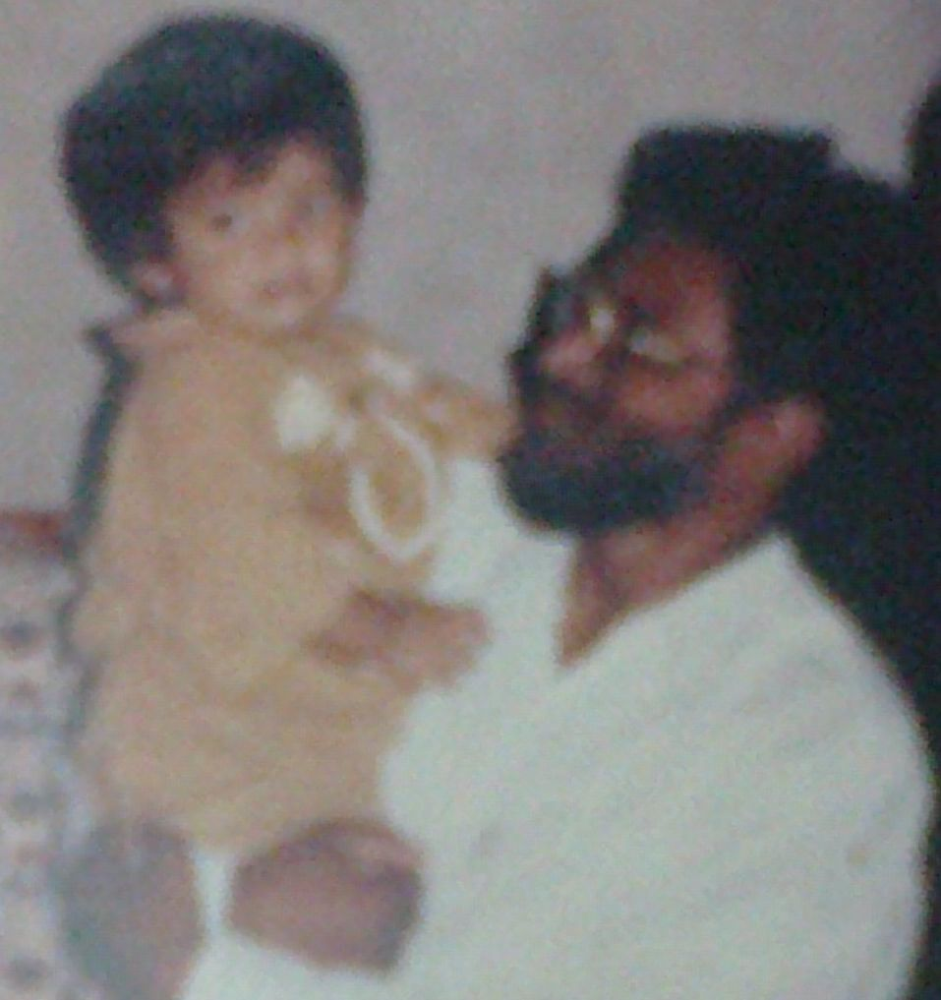

গতকাল নাকি বিশ্ব বাবা দিবস ছিল । দিনটা চলে গেছে । তাই এখন এসব লেখার কতটা যুক্তি আছে- জানি না । তবে ক্ষতি কি, বাবার ভালবাসা, আদর স্মরণ করার জন্য যে বাবা দিবস হতে হবে এমন কোন কথা তো নাই । তাই না?
কোন নির্দিষ্ট দিবসে কাউকে নিয়ে এভাবে লিখে পোস্ট করাটা আমার কাসে একটু হাস্যকর লাগে। কারন সম্পূর্ণ ব্যাপারটাই আমার কাছে লোক দেখানো বলে মনে হয় । তাই আমার এই লেখা আমার বাবার জন্যে না । কারন আমি জানি এই লেখা তার পড়ার সম্ভবনা খুব কম। তবুও একদিন নিজের বাবাকে নিয়ে শো- অফ করাই যায় ।
আমার বাবার নাম মোহাম্মাদ আব্দুল্লাহ । ভদ্রলোক পেশায় একজন শিক্ষক । এবং লোকমুখে শুনেছি (কখনো অভিজ্ঞতা হয় নাই ) তিনি নাকি বেশ জাঁদরেল মানের শিক্ষক । আর দশটা টিপিকাল বাঙালি বাপ-ছেলের সম্পর্কের মত আমাদের দুইজনের সম্পর্কেও ভালবাসার ছড়াছড়ি সীমাহীন, অভাবটা শুধু বহিঃপ্রকাশের। কারন ঐ যে, আমরা তো ছেলে মানুষ । আমাদের তো আবেগ প্রকাশ করতে নেই । তাতে নাকি পুরুষত্ব কমে যায় ।
ছোটবেলায় আমার বাবাকে দেখতাম সকালে উঠে কলেজে চলে যেতো। দুপুরে ফিরে বাসায় ব্যাচ পড়াত। সন্ধ্যায় কলেজের দু-একজন স্যারদের সাথে হয়ত বসে দু-চারটে কথা কখনো বলত, আবার বলত না । বাসায় ফিরে সে কম্পিউটারে বসতো । এখানে একটু বলে রাখা ভালো যে, সৃষ্টিকর্তার অশেষ কৃপায় আমার বাবা বেশ কয়েকটা একাডেমীক বইয়ের লেখক হিসেবে কাজ করেছেন । ব্যাবসায় শাঁখার কোন ছাত্র থেকে থাকলে তিনি হয়ত আব্দুল্লাহ স্যারের “উচ্চ মাধ্যমিক হিসাববিজ্ঞান” বইটি পড়ে থাকবেন। শুনেছি বইটি নাকি আমাদের ফিজিক্সের বাইবেল খ্যাত “তপন স্যারের বই” এবং কেমিস্ট্রির বাইবেল খ্যাত “নাগ-হাজারি স্যারের” বইয়ের মত বিখ্যাত । তো বাসায় ফিরে তিনি কম্পিউটারে বইএর কাজ করতেন । আমি আমার এই বয়স অব্দি তাকে রাত ১০ টা – ১১ টায় ঘুমিয়ে পড়তে খুব কম দেখেছি। তিনি রাত জাগতেন । রাত জাগতে ভালবাসতেন কিনা জানি না । তবে জাগতেন। বই লিখতেন। যতটুকু না নিজের জন্যে এইসব করতেন , তার চেয়েও বেশি করতেন তার সংসারের জন্য, সহধর্মিণীর জন্যে, তার সন্তানদের জন্য। আমার রাত জাগার প্রতি ভালবাসা বোধ হয় তার এই অভ্যাস থেকেই প্রাপ্ত।

তবে মাঝে মধ্যে তিনি বেশ দ্রুত শুয়ে পড়তেন । শুয়ে শুয়ে তিনি তার সহধর্মিণীর সাথে গল্প করতেন। কলেজের গল্প। আমি তাদের দুইজনের মাঝে শুয়ে (আমার আবার ছোট বেলা থেকে আব্বু-আম্মুর মাঝে না ঘুমাইলে ঘুম আসত না -_- । আমি বেশ বড় হয়ে যাওয়ার পরো আম্মুর কাছে ঘুমাতাম। এমনকি এখনো বাসায় গেলে আব্বু-আম্মুর কাছে ঘুমাই। এই ব্যাপারে আমি একটু আহ্লাদি :P ) সেইসব কথা শুনতাম। কিছু বুঝতাম না ঠিক, কিন্তু আমার ভালো লাগত।
কখনো কোন কাজে আব্বুর সাথে আমার বাইরে যেতে হলে, সেই দিনটি আমার জন্যে হত ইদের দিনের সমান । কারন আমি বাইরে গেলেই ক্রিকেট ব্যাট, নাইলে বল, নাইলে কিছু না কিছু কেনার জন্যে আবদার করতাম । আর তার জন্যে আমাকে বায়না করতে হত না । যেটাই চাইতাম, পেয়ে জেতাম । সাধারণত দুপুর থেকে ব্যাচ পড়ানো শেষ করে বিকেলে আমাকে নিয়ে বের হতেন । এমন দিনগুলোতে আমি পড়ানোর ঘরের আসে পাশে ঘুর-ঘুর করতাম। কখন পড়ানো শেষ হবে এইটা দেখার জন্য । বড় হয়ে যাওয়ার পর আব্বুর সাথে এই বাইরে যাওয়াটা মিস করি সব থেকে বেশি ।
কষ্ট করে এই পর্যন্ত পড়ে ফেলে কেউ যদি আমার বাবাকে একদম আদর্শ একজন বাবা ভাবতে শুরু করেন , তাদের জন্য সমবেদনা :D । তিনি এতোটাও আদর্শ নন । একবার তাকে তার পরিচিত কোন ব্যক্তি তার চার সন্তানের পড়াশোনা সম্পর্কে জিজ্ঞাসা করলে কে কোন ক্লাসে পড়ে- এইটা তিনি বলতে পারেন নাই -_- । আবার এমন অনেক গুঞ্জন শুনেছি আব্দুল্লাহ স্যার নাকি তার চার ছেলেমেয়ের পুরা নাম বলতে পারেন নাই । কথার সত্যতা জানি না। কিন্তু অসম্ভব কিছুই না :p । যেখানে অন্য অনেক বাবা-মাকে ছেলে মেয়েদের পড়াশোনা নিয়ে চিন্তিত হতে দেখেছি, চাপ দিতে দেখেছি- সেই তুলনায় আমাদের “স্যার’ কিংবদন্তি । আম্মু আমাদের পড়াশোনার জন্যে বকা দিলে, তিনি আমাদের সাথে নিয়ে টিভি দেখতে বসতেন । এইচ এস সি পাস করা পর্যন্ত তাকে আমার পড়াশোনা নিয়ে তেমন ভাবতে না দেখলেও, অ্যাডমিশনের সময়ে তার চিন্তা আমি দেখেছি । ঐ সময়ে বহুত পেইন দিছে সে আমাকে। আগের ১২ টা বছরে না নেওয়া খোজ, না করা খেয়াল গুলা , তিন মাসে সুদে আসলে পুশায় দিসে ।
সে সময়ে আমার মাথায় নতুন ভাবনার উদয় হল যে কুরবানি ইদে বাসায় যাবো না। ঢাকায় একা করবো । বাসায় বললাম যে বাসায় গেলে পড়া হয় না , আবার ফেরার টিকেট পাওয়া যায় না। তাই ইদে বাসায় আসছি না । (আসলে উদ্দেশ্য ছিল ঢাকায় ইদ কেমন হয় সেইটা দেখা ;) )। তাই অনেক জোরাজুরির পর আমার জিদের সামনে আরো একবার তাকে নতিস্বীকার করতে হয় । ইদের পরের দিন হুট করে বাসা থেকে ফোন দিয়ে আমাক আমার বোনেরা বলে যে , জিও, জলদি আব্বুকে ফোন দে। আব্বু তোর জন্যে মাংস নিয়ে রওনা হয়ে গেছে। বলে গেছে যে বাস পাবে তাতেই উঠে ঢাকা চলে যাবে। তাকে আটকা । উল্লেখ্য তখন বেশ দুর্যোগপূর্ণ আবহাওয়া ছিল । এবং সেইদিন সে ঢাকায় এসে গেছিলো । আমাকে কুরবানির মাংস খাওয়ানোর জন্য।
২০০৮ সালের ফেব্রুয়ারিতে আমি যখন সবে মাত্র ক্লাস সিক্সে উঠি, তখন আব্বুর প্রোমোশন হয়ে ট্রান্সফার হয় নাটোর কাদিরাবাদ ক্যান্টনমেন্ট স্যাপার কলেজে । তিনি প্রিন্সিপাল হিসেবে সেখানে যোগদান করেন । তখন ছোট ছিলাম, তাই এইভাবে বাসা থেকে দূরে যাওয়া নিয়ে তার উপর দীর্ঘদিন আমার বেশ অভিমান ছিল। শৈশব- কৈশোর পার করার ঐ দিনগুলোতে আমার বাবাকে আমি মিস করতাম বেশ ।
একটু একটু বয়স বাড়ার কারনে সে এখন আমাকে “পরিবারের ছেলের” জায়গায় বসাতে চায় । সে এমন একটা জায়গা থেকে কষ্ট করে আজকের এই অবস্থানে এসেছে যেখানে সবসময় প্রাপ্তির আনন্দের চেয়ে দেনার দায়ভারের পাল্লা থেকেছে বেশি। আর তাই কিছুদিন আগে রোজায় বাসায় যেয়ে যখন নিজের উপার্জন করা টাকা দিয়ে তাকে তার জীবনের প্রথম “স্মার্টফোন” টা কিনে তার হাতে দিসিলাম , তার সেই তৎক্ষণাৎ ঈষৎ লজ্জা মিশ্রিত হাসি আমার জীবনের অন্যতম সেরা অর্জন হয়ে থাকবে।
এইভাবে লিখতে থাকলে কখনো শেষ করা সম্ভব হবে না, তাই আর ছোট্ট একটা কথা বলে এই লেখা শেষ করবো। ঘটনা এই ২ দিন আগের । উইকএন্ডে বাসায় গেলে আমি আমার বোনদের সাথে বেশ আড্ডা মেরে সময় কাটাই । তারাই আমাকে বলে যে আব্বু নাকি তাদের সামনে বলেছে যে আমি নাকি তার চোখের সামনে থেকে গেলে সে অস্বস্তি বোধ করে । তার নাকি কিছু ভালো লাগে না । তার নাকি মনে হয় আমি যেন তার সামনে বসে থাকি ।
আমি সবসময় বিশ্বাস করি, যে ভালবাসার সম্পর্কগুলোর বহিঃপ্রকাশ হয় না , সেই সম্পর্কগুলোতে আবেগ থাকে সব থেকে বেশি । বাপ-ছেলের বন্ধুত্বপূর্ণ সম্পর্ক আমাদের নেই , এবং তার জন্যে আমার আক্ষেপের শেষ নেই । তবে অব্যক্ত যে ভালবাসা আছে দুজনের মনের মাঝে দুজনের জন্যে – তাও বা কম কিসের ।
তোমরা যদি এইটা দেখে থাকো, তাইলে প্রিন্সিপাল স্যারকে কখনো গল্পের মাঝে টুক করে বলে দিও, “his son loves him the most. He might not be the ideal father but I want him as my father for all the next life I am gonna have. ” আর তারে বলবা আমারে নিয়ে বেশি টেনশন না করতে। cause his son won’t do anything that will let him down. আবার এই লেখা তারে দেখাতে যেয়ে না। সে যেমন আবেগি, কি দিয়ে কি করে বসে কে জানে। পরে আবার তার সামনে যাইতে আমার লজ্জা করবেনে >_< । আর তোমরা আমার নামে তার কানভারি করবা না ।